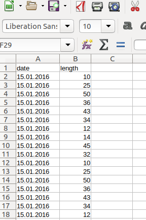
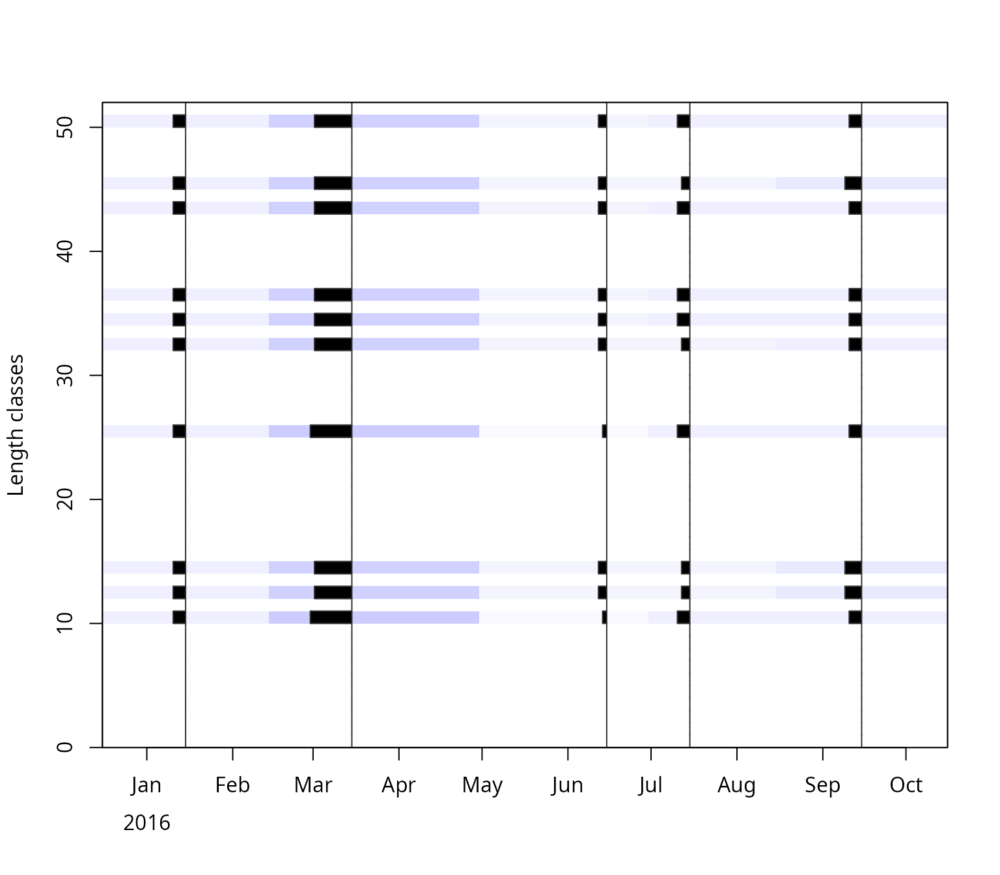
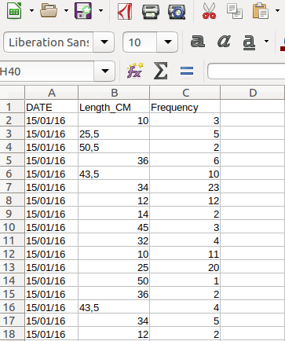
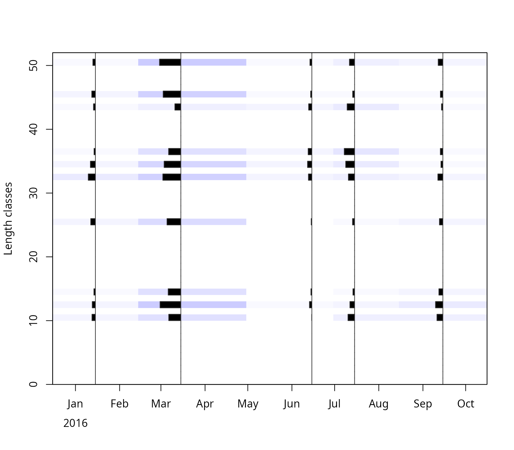
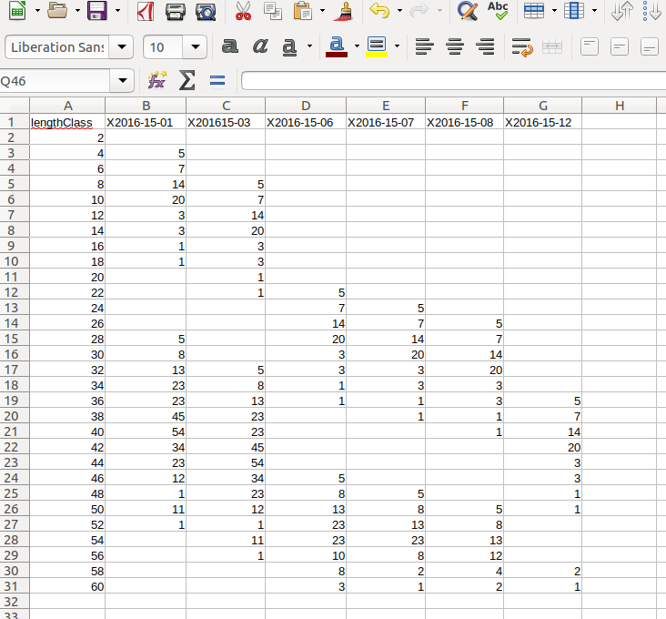
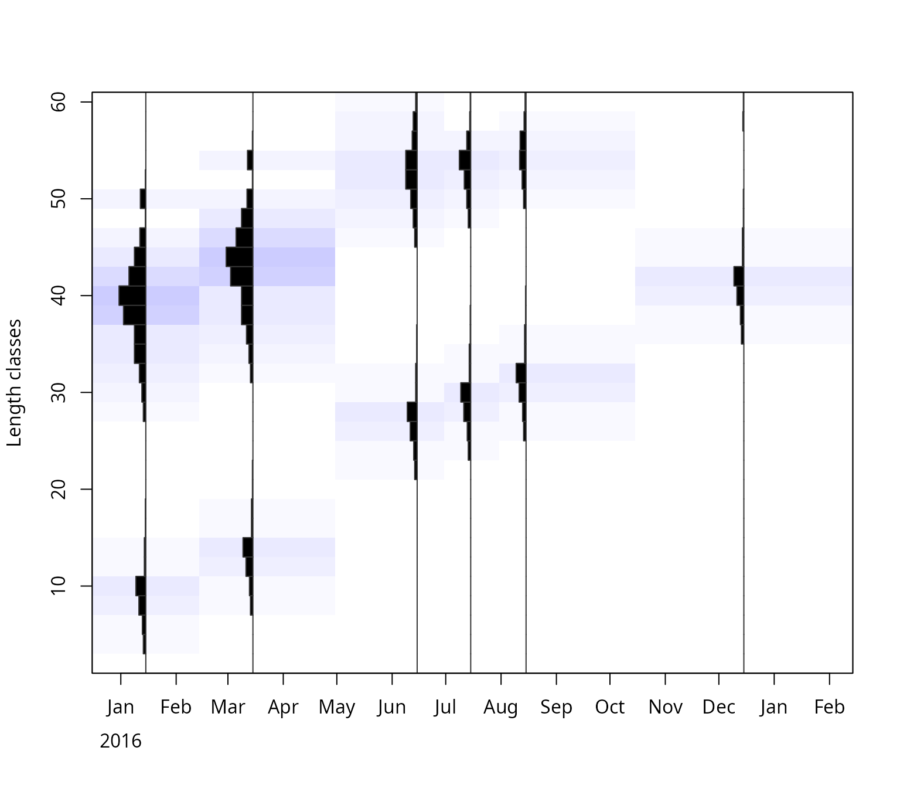

Length-frequency data for TropFishR
Tobias K. Mildenberger
Source:vignettes/lfqData.Rmd
lfqData.RmdBackground
Length-frequency data (LFQ) is collected by measuring the length of focal fish species onboard of the fishing vessel, the landing site or the fish market. Concerning fish there are three different lengths which can be measured: standard length (SL), fork length (FL), and total length (TL), for more information see here. The big advantage of LFQ data is that only a representative subsample of the total catch is needed, meaning that not every fish in the catch has to be measured if the subsample is random but representative. The sample should be representative of the whole stock under investigation and for all seasons of a year. Furthermore, enough samples of a range of different fish lengths have to be measured in order for the methods of TropFishR to work - a reference value is around 50 fish measurements per month. Assuming that collected data are entered in some spreadsheet or text format, this document will illustrate how different arrangements of data can be read into R and converted to the LFQ list required by all methods within TropFishR. No manual data input in R is required, The data used in the examples below were generated randomly.
LFQ import
There are three main ways in which you can arrange your data in a
spreadsheet or text file and easily import it into R an convert it to a
LFQ list (Fig. 1-3). Each of these 3 methods works evenly well with a
‘csv’, ‘xls’, or ‘txt’ file. For simplification, I will present all
three methods with ‘csv’ files and consequently demonstrate how to use a
‘xlsx’ and a ‘txt’ file. The example files are included in TropFishR
(folder ‘extdata’ of the installed package) and can be copied and opened
with a spreadsheet software to see their arrangement.
system.file() returns the path to these files; for your own
data, use the path to your file instead,
e.g. read.csv("C:/data/lfq1.csv"). This vignette requires
to load the TropFishR package:
library(TropFishR)
## folder with the example files
system.file("extdata", package = "TropFishR")
#> [1] "/tmp/RtmpAaIq2K/temp_libpathc00756898edff/TropFishR/extdata"Data arrangement 1
The first data arrangement assumes that each measurement was inserted into a specific cell in the spreadsheet, together with associated date when this measurement was done.

The data in this arrangement can be loaded into R by following code.
lfq1 <- read.csv(system.file("extdata", "lfq1.csv", package = "TropFishR"))
head(lfq1)
#> date length
#> 1 15.01.2016 10
#> 2 15.01.2016 25
#> 3 15.01.2016 50
#> 4 15.01.2016 36
#> 5 15.01.2016 43
#> 6 15.01.2016 34
lfq1$date <- as.Date(lfq1$date, format = "%d.%m.%Y")
lfq1new <- lfqCreate(data = lfq1, Lname = "length", Dname = "date")
plot(lfq1new, Fname = "catch")
It is awlays important to convert the date information into the R
class ‘Date’ which can be done by the function as.Date().
The second argument in that function displays the format of the date in
your data, ‘%d’ stand for the day, ‘%m’ for the month, and ‘%Y’ for the
year with the century, e.g. 2014, without the century it would be ‘%y’,
e.g. 14. The separator, here ‘.’, should be the same as in your data
(see other examples below). The function lfqCreate() is a
handy function, which allows you to convert the dataframe into a list in
the right format. The arguments ‘Lname’ and ‘Dname’ define the names of
the columns in your dataframe with the length measurements and the
dates, respectively. They should correspond to
colnames(lfq1). Besides the arguments above it allows for
many other adjustments, such as setting the bin size or aggregating the
data monthly, see ?lfqCreate for more information.
Data arrangement 2
The second data arrangement represents the case with an additional column which contains the number of times the length was measured at respective date.

Data of this arrangement can be loaded into R by following code.
lfq2 <- read.csv2(system.file("extdata", "lfq2.csv", package = "TropFishR"))
head(lfq2)
#> DATE Length_CM Frequency
#> 1 15/01/16 10.0 3
#> 2 15/01/16 25.5 5
#> 3 15/01/16 50.5 2
#> 4 15/01/16 36.0 6
#> 5 15/01/16 43.5 10
#> 6 15/01/16 34.0 23
lfq2$DATE <- as.Date(lfq2$DATE, format = "%d/%m/%y")
lfq2new <- lfqCreate(data = lfq2, Lname = "Length_CM", Dname = "DATE", Fname = "Frequency")
plot(lfq2new, Fname = "catch")
This file is separated by semicolons and uses a comma as decimal separator (as spreadsheet software with European settings exports csv files), which is the default ofread.csv2(); use
read.csv() for files separated by commas with a point as
decimal separator, as in the first example. Always check the imported
data, e.g. with head() or str(): if all values
end up in one column, the separator is wrong, and if the lengths are
characters instead of numbers, the decimal separator is wrong. Be aware
of the different date format, the different column headers or names and
the additional argument in the function lfqCreate() called
‘Fname’ displaying the name of the column with the frequency
information.
Data arrangement 3
The last data arragement presented here, assumes that the data was already sorted into length classes within your spreadsheet. The first column does now represent the length classes and the number of times each length class was observed at repsective sampling times is in the subsequent columns, where each column represent one sampling time (here aggregated per month). In this example, the information about the date is contained within the header of the not-length-class columns (cp Fig. 3). This is however not necessary and the date information can also be added manually in R.

Data in this arrangement have to be treated a little differently:
lfq3 <- read.csv(system.file("extdata", "lfq3.csv", package = "TropFishR"),
check.names = FALSE)
head(lfq3)
#> lengthClass 2016-01-15 2016-03-15 2016-06-15 2016-07-15 2016-08-15 2016-12-15
#> 1 2 NA NA NA NA NA NA
#> 2 4 5 NA NA NA NA NA
#> 3 6 7 NA NA NA NA NA
#> 4 8 14 5 NA NA NA NA
#> 5 10 20 7 NA NA NA NA
#> 6 12 3 14 NA NA NA NA
dates <- as.Date(colnames(lfq3)[-1], format = "%Y-%m-%d")
dates
#> [1] "2016-01-15" "2016-03-15" "2016-06-15" "2016-07-15" "2016-08-15"
#> [6] "2016-12-15"
lfq3new <- list(dates = dates,
midLengths = lfq3$lengthClass,
catch = as.matrix(lfq3[,-1]))
class(lfq3new) <- "lfq"
lfq3new$catch[is.na(lfq3new$catch)] <- 0
plot(lfq3new, Fname = "catch")
In this case, the functionlfqCreate() can not be used,
instead the data is arranged into a list manually. The dates are taken
from the column names. By default, R changes column names that do not
start with a letter, e.g. ‘2016-01-15’ becomes ‘X2016.01.15’; the
argument check.names = FALSE keeps the original names.
Check that none of the dates is NA, which happens if the
format in as.Date() does not match the dates in your file.
If the dates are not in the header of your file, they can be entered
manually,
e.g. dates <- as.Date(c("2016-01-15", "2016-03-15", ...)),
with one date per column. Next, the dates, mid lengths and the catch
matrix can be directly arranged together with the function
list(). It is of crucial importance to use the exact names
and spelling (incl. case sensitivity) in the list (‘dates’,
‘midLengths’, ‘catch’). with the function class() the
TropFishR internal class ‘lfq’ can be assigned to the created list.
Missing values in the catch matrix (NA, NaN)
should be put to 0.
Other file formats
Of course, your data has not to be in the csv format, it can just as
well be ‘odt’, ‘xls’, ‘xlsx’, ‘txt’ or any text file. Other formats
require different functions to load the data into R (beside
read.csv2()). The following code demonstrats this for a
‘xlsx’ and ‘txt’ file.
lfq2a <- read.table(system.file("extdata", "lfq2.txt", package = "TropFishR"),
header = TRUE, sep = "\t", dec = ",")
head(lfq2a)
#> DATE Length_CM Frequency
#> 1 15/01/16 10.0 3
#> 2 15/01/16 25.5 5
#> 3 15/01/16 50.5 2
#> 4 15/01/16 36.0 6
#> 5 15/01/16 43.5 10
#> 6 15/01/16 34.0 23
install.packages("openxlsx")
library(openxlsx)
lfq3a <- read.xlsx(system.file("extdata", "lfq3.xlsx", package = "TropFishR"),
sheet = 1, check.names = FALSE, sep.names = "-")The function read.table() allows to read and load many
different file formats into R, The arguments ‘sep’ and ‘dec’ control the
separator between columns (here tabstop) and the decimal separator (here
comma), respectively. Additional arguments like ‘fileEncoding’ and
‘skipNul’ might be necessary to use for controlling the encoding of the
file and if nuls should be skipped. More information about the arguments
can be viewed with ?read.table. There are many different R
packages available to read ‘xls’ and ‘xlsx’ files into R, one of the
fastest is openxlsx, but it does not allow to read in ‘xls’ files. For
this you might consider using the package ‘xlsx’. These functions allow
you to read in any sheet of your ‘xlsx’ file by using the ‘sheet’
argument.
Data of several years
The lfq data are not limited to one year. The catch matrix has one
column per sampling time, and the dates can span several years; each
column just needs its correct date. With data arrangement 1 or 2,
lfqCreate() builds the lfq data for any number of years
from the dates of the measurements. With data arrangement 3, the dates
of all columns are added, e.g. for monthly samples from January 2022 to
December 2023 (here with random numbers instead of the data read from a
file):
## data arrangement 3: length classes and 24 monthly samples
set.seed(1)
lfq4 <- data.frame(lengthClass = seq(2.5, 29.5, 1),
matrix(rpois(28 * 24, 10), ncol = 24))
## mid-month dates of the samples, Jan 2022 to Dec 2023
dates <- as.Date(paste0("15-", rep(1:12, 2), "-", rep(2022:2023, each = 12)),
format = "%d-%m-%Y")
lfq4new <- list(dates = dates,
midLengths = lfq4$lengthClass,
catch = as.matrix(lfq4[,-1]))
class(lfq4new) <- "lfq"
range(lfq4new$dates)
#> [1] "2022-01-15" "2023-12-15"The growth methods (ELEFAN, ELEFAN_SA,
ELEFAN_GA) use all samples together, which helps to follow
cohorts over a longer time. The catch curve (catchCurve)
and VPA assume a representative sample of the catch of one
year (or the average of several years). lfqModify() sums
the samples per year (one column per year) or selects the samples of
certain years:
## one column per year
lfq4year <- lfqModify(lfq4new, vectorise_catch = TRUE)
colnames(lfq4year$catch)
#> [1] "X2022" "X2023"
## samples of 2023 only
lfq4_2023 <- lfqModify(lfq4new, years = 2023)
ncol(lfq4_2023$catch)
#> [1] 12With the catch per year, the argument catch_columns of
catchCurve and VPA selects one year or several
years (summed), e.g.
catchCurve(lfq4year, catch_columns = 2) for 2023.
Sampled numbers and total catch
The catch matrix of the lfq data (catch) should contain
the numbers of fish measured per length class and sampling time, as in
the examples above. Most methods of TropFishR only use the relative
length composition of these samples and do not require the total catch:
the growth methods (e.g. ELEFAN_GA), the length-converted
catch curve (catchCurve) and the yield per recruit models
(predict_mod with the selectivity and fishing mortality of
the catch curve). The bootstrapped methods
(e.g. ELEFAN_GA_boot) even require the sampled numbers,
because they resample the measured fish.
Only the length-based virtual population analysis (VPA)
estimates absolute numbers and requires the total catch of the stock.
The samples have to be raised to the total catch, which is usually done
with the total landings in weight: the raising factor of each sample is
the landings divided by the weight of the sample. If the weight of the
samples was not measured, it is estimated from the numbers per length
class and the length-weight relationship
().
The function lfqRaise does this, but it is easier to keep
the sampled numbers in the lfq data and to pass the landings in kg
directly to VPA (argument landings), which
raises the samples internally:
library(TropFishR)
data(synLFQ7)
lfq <- synLFQ7
lfq$par <- list(Linf = 123, K = 0.2, t0 = 0, M = 0.2,
a = 0.015, b = 3) # length-weight relationship with W in g
## landings in kg at the sampling dates (here simply assumed)
landings <- c(20000, 25000, 30000, 35000, 40000, 30000, 25000, 20000)
## raising factors (landings / weight of the samples)
lfqRaise(lfq, landings = landings, LW_unit = "g")$raising
#> sample landings sampleWeight estimated factor
#> 1 2016-01-01 20000 14836.23 TRUE 1.348051
#> 2 2016-03-02 25000 15289.33 TRUE 1.635127
#> 3 2016-04-02 30000 15659.33 TRUE 1.915791
#> 4 2016-07-02 35000 15974.05 TRUE 2.191053
#> 5 2016-08-01 40000 16554.03 TRUE 2.416331
#> 6 2016-10-01 30000 14380.58 TRUE 2.086146
#> 7 2016-11-01 25000 14515.66 TRUE 1.722278
#> 8 2016-12-01 20000 14859.87 TRUE 1.345906
## plus group below Linf and VPA with the raised catch
pg <- lfq$midLengths[max(which(lfq$midLengths < lfq$par$Linf))]
lfq <- lfqModify(lfq, plus_group = pg)
res <- VPA(lfq, landings = landings, terminalE = 0.5, LW_unit = "g")With by = "sample" (in VPA:
raiseBy = "sample", the default) each sample is raised with
its own landings, which also gives months with large landings more
weight than months with small landings. If the landings are only known
per year, use raiseBy = "year" and one value per year. If
the landings only cover a part of the catch of the stock (e.g. one of
several fleets), the argument catch_corFac of
VPA allows an additional raising factor. The option
catch_unit = "kg" of VPA is meant for catches
in weight per length class, not for the total landings.
Conclusion
This vignette demonstrates the first step in the application of TropFishR, the arrangement of your length measurements in a spreadsheet (or text file) and the import into R. Nevertheless, this step is important and several requests motivated me to write this vignette. How you can use TropFishR for the further analysis of your data is demonstrated in the detailed tutorial.